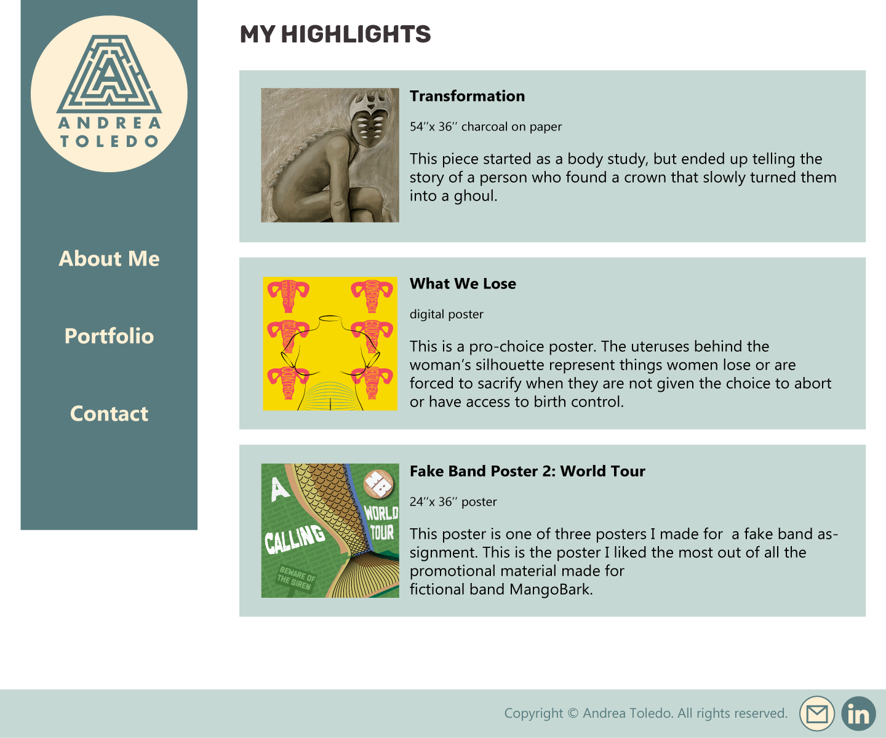
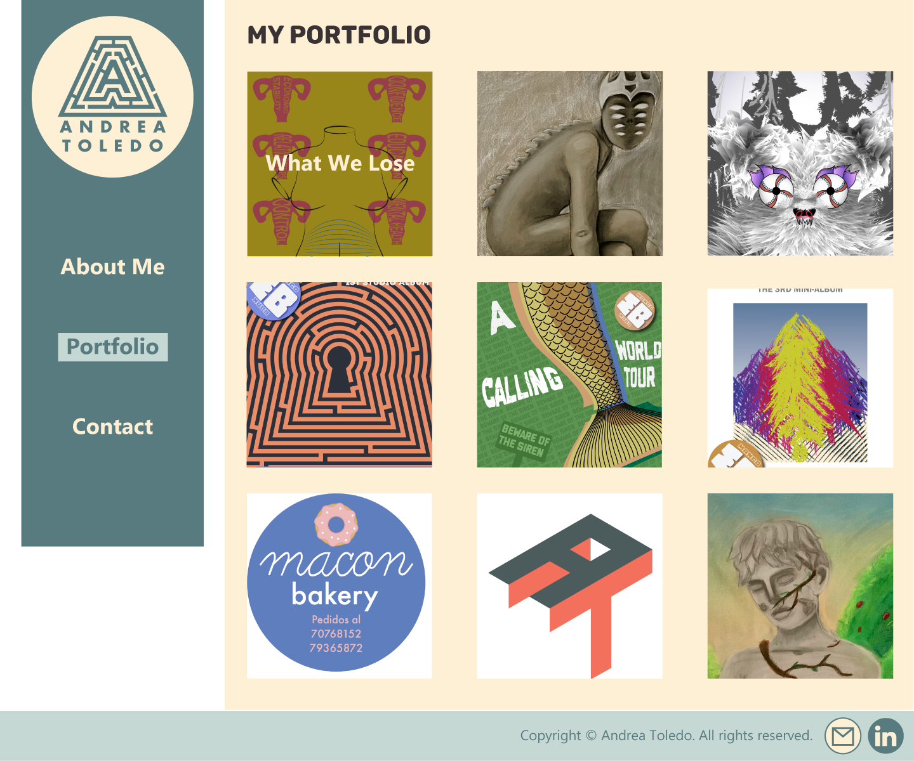
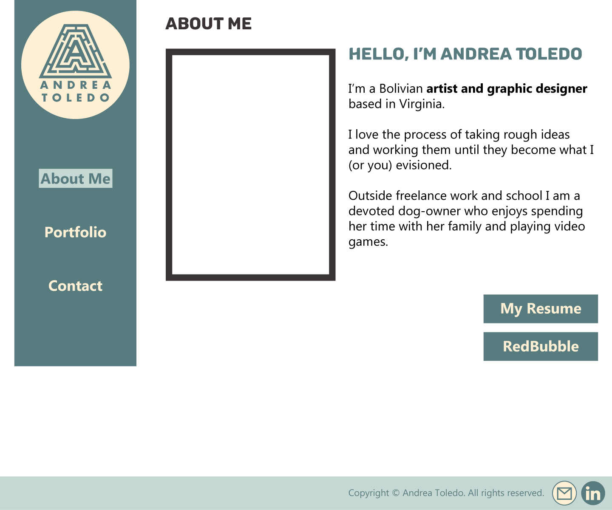
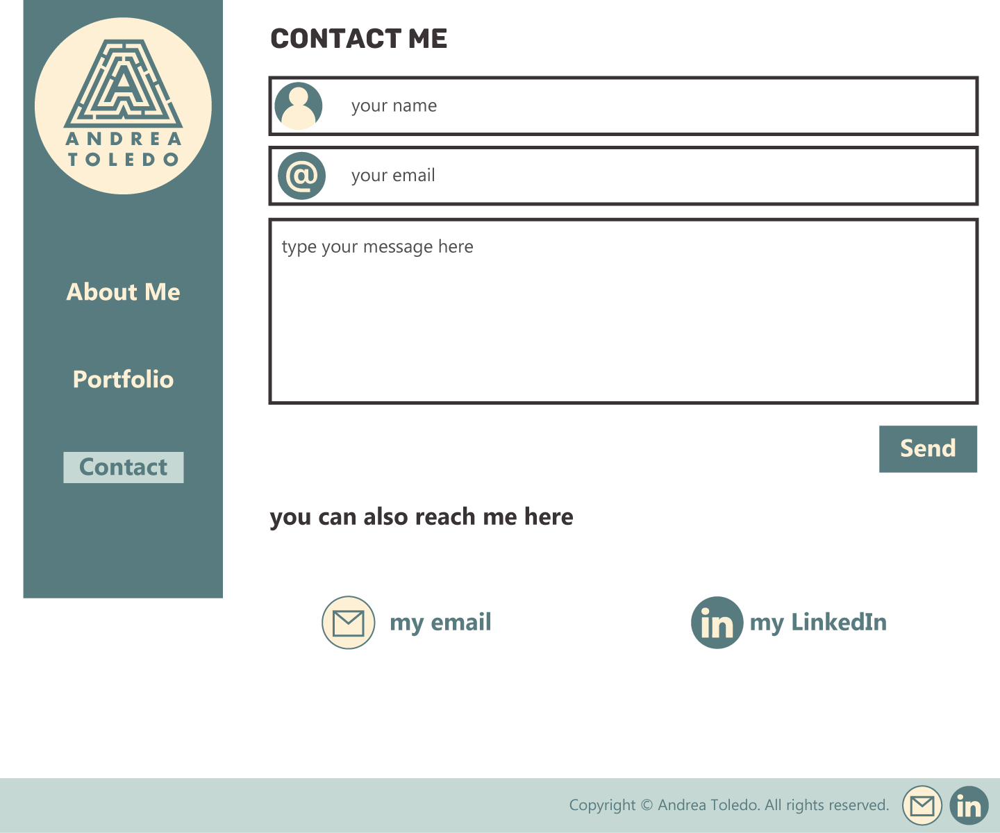

I decided to mix both of my mockups, but leaning towards my second design. I took mockup 2 and changed the color pallete to the same as mockup 1 as well as the layout of some items.

The first thing I did was move my name closer to my logo to create some association. My name now is under the logo so it looks like it's part of it. I tried to have less negative space, following some feedback I received.

I made a grid in Illustrator with the guide lines and the ruler to try and mimic what madding and borders would do when I hace to code this page, partly to make it look better and partly to make it a little easier on me making my vision a reality.

I'm considering using a short video as my picture, but I am not completely convinced yet.

I replicated my layout of the contact page from my first mockup. I also added a send button since I forgot last time. The email and linkedin logos should redirect the user to the websites.